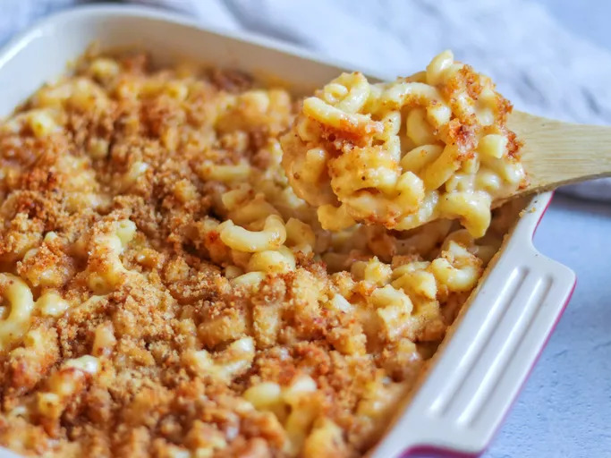

Mac and Cheese!
Home!

Description
Macaroni and cheese is a dish of macaroni pasta and a cheese
sauce, most commonly cheddar sauce. The traditional macaroni
and cheese is put in a casserole and baked in the oven;
however, it may be prepared in a sauce pan on top of the
stove or using a packaged mix.
Ingredients
- Macaroni
- Butter and flour
- Milk
- Cheese
- Seasonings
- Bread crumbs
Steps
- Boil the noodles, drain, and transfer to a prepared baking dish.
- Make the cheese sauce, pour the sauce over the noodles, and stir.
- Make the topping, spread it over macaroni and cheese, and sprinkle with paprika.
- Bake the mac and cheese until the topping is golden brown.